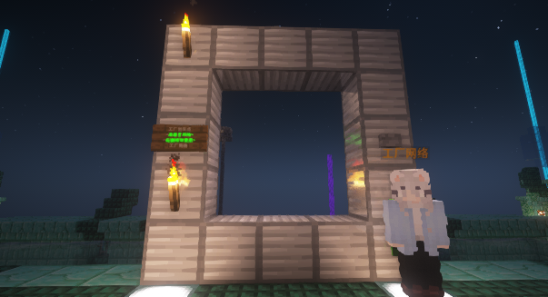
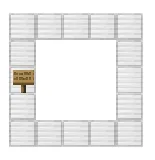

Loading header...
星门插件
星门插件为玩家提供了一个快捷的传送通道。

星门
指令一览
无
功能介绍
星门可以将玩家传送到其他在同一网络中的星门。
带有按钮的星门可以通过左/右点击左侧告示牌以在不同的目的地之间上/下切换。在确认目的地后，点击右侧的按钮即可打开传送门，进入后会传输到目的地。
对于带有按钮的星门，在未选择目的地时点击按钮会提示无效目的地。星门带有权限控制，选择了本次目的地的玩家才有权限能够进入星门。其他玩家需要等到冷却时间结束，目的地重置或者该玩家传送后才能设置目的地或进入星门。
建造星门
在Raphael，星门的建造被严格限制，普通玩家无权限自主建造星门。这是因为星门会造成弱加载，增加服务器卡顿，同时禁用还可以保护铁路系统。
Raphael的星门可以通过城镇玩法申请。
在工厂，自主建造星门是允许的。星门使用铁块、告示牌和按钮制作成。（实际上可用材料不止铁块，但官方文档并没有明确说明哪些方块可用作星门）
星门的建造结构如下：

按照图中结构建造星门
在创建星门时需要提供参数，填写在左侧的告示牌上。
参数在星门创建后无法再次修改，如必须修改，只能拆毁重做，这将会消耗你额外的资金，所以在确认修改之前请仔细检查！
星门的数据格式如下：
- 星门名称，也即是当前星门所在的传送点的名称
- 目标星门名称（可选），如果填写，会产生一个没有按钮的、始终链接到对应星门的定向星门。如果空置，则星门会连接到星门网络。
- 星门网络名称（可选），如果填写，该星门能够传送到其他处于相同网络的星门。如果你希望将星门连接到服务器公用网络，请填写:工厂网络 如果你希望将你的机器公开给大家使用，请填写：公开机器网络。如果第二行和本行均空置，星门会连接到central网络。
- 额外参数（可选），可选参数如下，本行留空默认为收费星门，建造者外的玩家每次进入星门收取2银币给建造者。
- h - 隐藏标记，被标记为隐藏的星门不会在网络列表中和卫星地图里显示
- p - 私有标记，被标记为私有的星门只能被其创建者使用
- b - 返回标记，被标记有返回标记的星门再次进入会回到前往此星门的星门（原路返回）
- r - 随机标记，随机星门会随机选择一个可用的目的星门前往
- f - 免费标记，被标记的星门不会向使用者收费
- a - 始终开启，被标记的星门始终开启（必须为定向星门）
你可以通过染料修改告示牌字体的颜色，使用染料右键星门即可。
没有隐藏标记的星门在创建后会在卫星地图上显示，更新可能有延迟。
目录